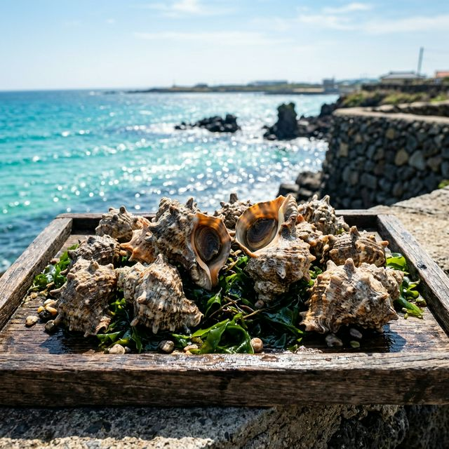
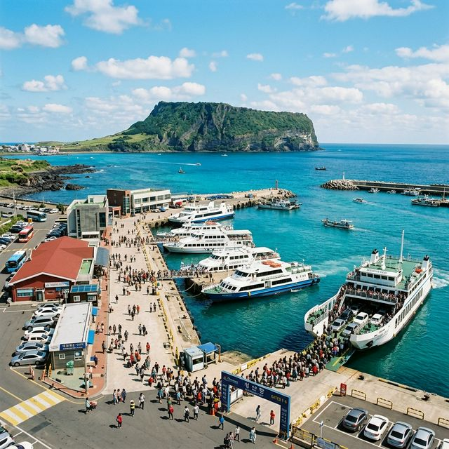
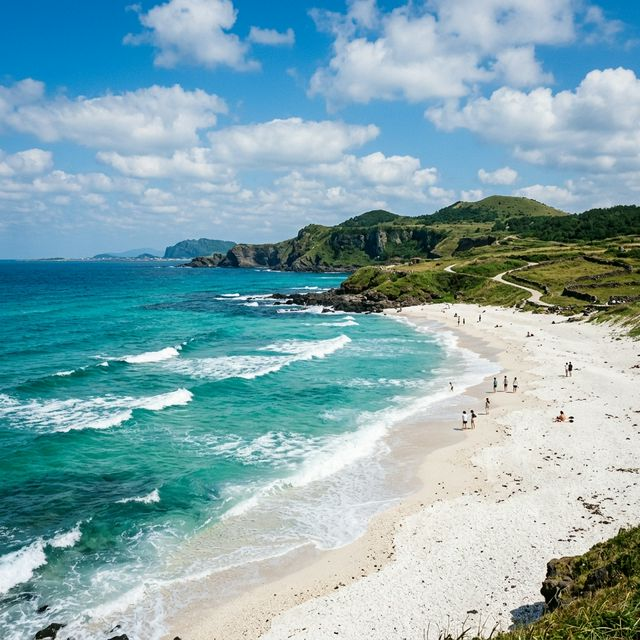

우도 소라축제 2026 일정 및 배시간표 — 4월 24일 개막, 별미 소라회와 검멀레 해변 투어 완벽 정리
2026년 4월, 에메랄드빛 바다가 펼쳐지는 섬 속의 섬 우도가 다시 한번 주황빛 뿔소라의 향연으로 물듭니다. 이번 제18회 우도 소라축제는
4월 24일부터 25일까지 양일간 개최되며, 우도의 청정 바다에서 갓 잡아 올린 뿔소라의 맛과 함께 다채로운 체험 프로그램이 준비되어 있습니다. 성산항에서 배를 타고 떠나는 설레는 여정부터, 야간 행사
'우도의 밤'까지 놓치지 말아야 할 핵심 정보를 집약했습니다.
1. 2026 우도 소라축제 개최 개요 및 테마
우도 소라축제는 제주를 대표하는 로컬 축제 중 하나로, 해녀들이 직접 채취한 싱싱한 뿔소라를 테마로 합니다. 올해는 4월 하순의 따뜻한 봄바람과 함께 우도 전역이 축제장으로
변모하며, 특히 천진항 일대에서 가장 활발한 행사가 진행됩니다.
이번 축제의 슬로건은 "우도의 숨비소리, 소라에 담다"로 정해졌습니다. 단순한 먹거리 축제를 넘어, 우도의 독특한 해녀 문화와 섬의 자연 경관을 보존하고 알리는 친환경 문화
축제로서의 정체성을 강화한 것이 특징입니다. 축제 기간 내내 방문객들은 우도의 환상적인 개여울과 유채꽃이 어우러진 풍경을 배경으로 최고의 봄날을 만끽할 수 있습니다.

제주 우도 청정 앞바다에서 갓 잡아 올려 싱싱함을 자랑하는 뿔소라의 자태 / AI 제작 이미지
2. 축제 상세 일정과 장소 확인
2026년 우도 소라축제는 4월 24일(금요일)부터 4월 25일(토요일)까지 2일간 열립니다. 평일인 금요일에 시작하여 토요일 밤의 화려한 피날레로 이어지는 일정입니다. 주
행사장은 우도면 천진항 광장을 중심으로 조성되며, 하우목동항 인근에서도 보조 프로그램이 운영됩니다.
특히 토요일인 25일에는 이번 축제의 하이라이트인 '우도의 밤' 행사가 예정되어 있습니다. 평소 우도는 마지막 배가 끊긴 후 정막한 섬으로 변하지만, 이날만큼은 야간 관광
활성화를 위해 늦은 밤까지 각종 공연과 라이브 음악, 그리고 야간 푸드마켓이 운영되어 여행객들에게 잊지 못할 낭만을 선사할 예정입니다.
3. 성산항 여객터미널 배시간표 및 이용 안내
우도로 향하는 가장 보편적인 방법은 서귀포 성산항 여객터미널을 이용하는 것입니다. 도항선은 보통 오전 7시 30분부터 오후 5시~6시까지 30분 간격으로 수시 운항됩니다. 하지만
축제 기간에는 인파가 몰려 임시 증편되는 경우가 많으므로 현장 상황을 유연하게 체크해야 합니다.
승선 전에는 반드시 신분증을 지참해야 하며, 터미널 내 비치된 승선 신고서를 2부(입도용, 출도용) 작성해야 발권이 가능합니다. 축제 당일 현장은 매우 혼잡할 수 있으므로, 예상
방문 시간보다 최소 40분~1시간 정도 일찍 도착하여 여유 있게 발권 절차를 밟으시는 것을 강력히 추천드립니다.
4. 성산항 주차장 정보 및 요금 전략
차량을 성산항에 두고 몸만 들어가는 경우, 주차장 정보가 필수입니다. 성산항 공영주차장은 여객터미널 바로 옆에 위치하며, 대규모 차량 수용이 가능합니다. 주차 요금은 최초
30분은 무료이며, 이후 15분당 요금이 추가됩니다. 1일 최대 요금은 8,000원으로 설정되어 있어 섬에서 하루 종일 머물러도 부담이 적은 편입니다.
참고로 전기차나 경차, 장애인 차량 등은 50% 감면 혜택을 받을 수 있으므로 사전 정산기 이용 시 증빙 확인을 잊지 마시기 바랍니다. 또한 우도 내부에는 현재 렌터카 진입이
제한되어 있습니다. 6세 미만 영유아나 65세 이상 노약자, 임산부 등 교통약자를 동반한 경우에만 예외적으로 차량 선적이 가능하므로 일반 여행자분들은 성산항에 주차하시는 것이
정석입니다.

우도로 떠나는 설레는 시작점, 성산항 여객터미널의 활기찬 아침 풍경 / AI 제작 이미지
5. 뿔소라 도장 깨기! 주요 체험 프로그램
축제의 주인공인 뿔소라를 활용한 체험은 선택이 아닌 필수입니다. 가장 인기 있는 종목은 '소라 높이 쌓기 대회'와 '금소라·은소라 찾기'입니다.
특히 금소라 찾기는 모래사장이나 지정된 공간에 숨겨진 번표를 소라와 함께 찾아내면 실제 지역 상품권이나 선물을 증정하는 이벤트로 어른 아이 할 것 없이 큰 호응을 얻습니다.
또한 직접 해녀들과 함께 뿔소라를 구워 먹는 직화 소라 구이 체험장도 운영됩니다. 은은한 연탄불이나 숯불 위에 올려져 '탁탁' 소리를 내며 익어가는 소라의 향기는 축제장 전체를
가득 메웁니다. 갓 구워진 소라 살의 쫄깃한 식감과 바다 내음은 왜 우도 뿔소라가 전국적으로 유명한지를 입 안에서 증명해 줍니다.
6. 미식가들의 성지, 향토 음식점 메뉴 분석
축제장 내 조성되는 향토 음식점에서는 오직 우도에서만 맛볼 수 있는 신선한 메뉴들이 가득합니다. 뿔소라회(소라사시미)는 8kg 내외의 큰 소라를 골라 직접 썰어주는데, 그
오독오독한 식감은 전복보다도 뛰어납니다. 또한 뿔소라를 듬뿍 넣은 뿔소라 비빔국수와 소라죽은 든든한 한 끼 식사로도 손색이 없습니다.
음식 가격은 축제 위원회 차원에서 정찰제를 유도하여 바가지 요금을 철저히 차단할 계획입니다. 여기에 우도의 또 다른 명물인 우도 땅콩 막걸리 한 잔을 곁들이면 신선놀음이 부럽지
않습니다. 뿔소라 무침의 매콤새콤한 양념과 고소한 땅콩 맛의 조화는 축제의 즐거움을 배가시키는 최고의 마리아주가 될 것입니다.
7. 섬 내부 이동 수단: 전기차 vs 버스
렌터카 없이 들어온 섬 안에서 어떻게 이동할지 고민이실 겁니다. 우도 내 이동 수단은 크게 전기차(삼륜차), 전기 자전거, 순환 버스로 나뉩니다. 두 명의 커플이나 친구 사이라면
기동성이 좋은 2인승 전기차 대여를 추천합니다. 섬의 해안 도로를 따라 시원한 바람을 맞으며 원하는 장소 어디든 멈춰 설 수 있다는 장점이 있습니다.
운전에 자신이 없거나 단체 여행객이라면 우도 순환 버스가 경제적입니다. 1일 자유 이용권을 구매하면 검멀레, 하고수동, 서빈백사 등 주요 거점에서 몇 번이고 내리고 탈 수
있습니다. 배차 간격도 축제 기간에는 좁혀지므로 편리하게 섬 전체를 조망할 수 있습니다. 각자의 여행 스타일과 체력을 고려하여 최적의 수단을 선택해 보시기 바랍니다.
8. 우도의 비경: 검멀레와 서빈백사 가이드
축제를 즐기는 틈틈이 우도의 8경을 둘러보는 것도 잊지 마세요. 검멀레 해변은 검은 모래라는 뜻으로, 웅장한 기암괴석과 거대한 동굴이 압권입니다. 이곳에서 보트를 타면
'주간명월'이라 불리는 해식 동굴 안의 환상적인 빛의 조화를 감상할 수 있습니다. 역동적인 보트 투어는 축제로 한껏 달아오른 흥을 더욱 돋워줄 것입니다.
반대편의 서빈백사(홍조단괴 해빈)는 눈이 부실 정도로 하얀 모래사장과 층층이 결이 다른 바다색으로 유명합니다. 천연기념물로 지정된 이곳의 알갱이는 산호가 아닌 홍조류가 굳어져
만들어진 것으로, 밟을 때의 서걱거리는 소리가 매력적입니다. 이곳에 가만히 앉아 지는 노을을 바라보는 것만으로도 최고의 힐링을 경험할 수 있습니다.

동양 유일의 홍조단괴 해빈, 서빈백사의 투명한 에메랄드빛 바다 풍경 / AI 제작 이미지
9. 4월 우도 여행 준비물 및 날씨 주의사항
4월 말의 우도는 봄이 무르익어 기온이 온화하지만, '바람의 섬'이라는 별명답게 바닷바람이 매우 강합니다. 낮에는 따사롭더라도 그림자가 가려지거나 해가 질 무렵에는 기온이 급격히
떨어질 수 있으므로, 가벼운 바람막이나 얇은 겉옷을 반드시 챙겨야 합니다. 또한 자외선이 강하므로 선크림과 선글라스는 필수 준비물입니다.
가장 유의해야 할 점은 기상 상황에 따른 배 운항 여부입니다. 풍랑주의보가 발효되면 축제 기간이라 하더라도 배가 결항될 수 있습니다. 여행 당일 출발 전 성산항 여객터미널이나
우도면 사무소에 전화하여 선박 정상 운항 여부를 교차 확인하는 습관이 필요합니다. 실시간 날씨 정보를 손 안에서 체크하며 유연한 여행 계획을 세우시길 바랍니다.
#우도소라축제
#우도여행
#우도배시간표
#성산항주차장
#제주도4월축제
#뿔소라구이
#검멀레해변
#서빈백사
#제주도가볼만한곳
#우도의밤